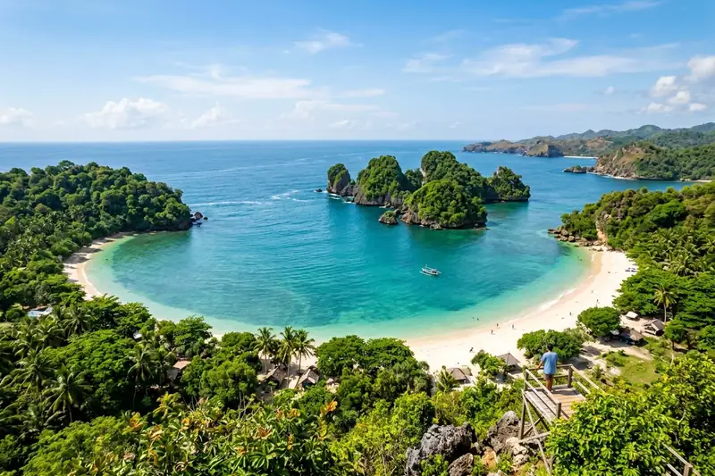

Pantai Teluk Asmara adalah destinasi pantai di kawasan Malang Selatan yang menawarkan gugusan pulau kecil, air laut tenang, dan pemandangan berbentuk hati yang membuatnya populer sebagai spot foto romantis.
Ringkasan Inti
- Pantai Teluk Asmara terletak di Desa Tambakrejo, Kecamatan Sumbermanjing Wetan, Kabupaten Malang, Jawa Timur.
- Nama Teluk Asmara berasal dari bentuk teluk yang menyerupai hati apabila dilihat dari ketinggian.
- Harga tiket masuk sekitar Rp 15.000 per orang, dengan biaya tambahan untuk parkir dan akses Bukit Asmara.
- Kabupaten Malang tercatat memiliki 91 obyek wisata pantai menurut data Dinas Kebudayaan dan Pariwisata setempat.
- Ombak di kawasan ini relatif tenang karena terlindungi oleh teluk dan gugusan pulau kecil di sekitarnya.
1. Apa Itu Pantai Teluk Asmara?
Pantai Teluk Asmara adalah kawasan wisata pantai di pesisir selatan Kabupaten Malang yang mulai dikelola sebagai destinasi wisata sejak tahun 2016 melalui kerja sama dengan Perhutani KPH Malang.
Pengelolaan awal kawasan ini dilakukan dengan nama Wana Wisata Clungup Barat, kemudian pada Februari 2017 dilanjutkan oleh kelompok masyarakat setempat dengan nama Wana Wisata Pantai Bangsong Teluk Asmara. Kawasan wisata ini memiliki luas area sekitar 134,6 hektare yang mencakup pantai, perbukitan, dan fasilitas wahana di sekitarnya.
2. Di Mana Lokasi Pantai Teluk Asmara?
Pantai Teluk Asmara berlokasi di Desa Tambakrejo, Kecamatan Sumbermanjing Wetan, Kabupaten Malang, Jawa Timur, dengan jarak tempuh sekitar 73 kilometer dari pusat Kota Malang.
Akses menuju lokasi ini melewati Jalur Lintas Selatan yang juga menghubungkan sejumlah pantai populer lain di Malang Selatan, seperti Pantai Bajul Mati dan Pantai Gua Cina. Kondisi jalan pada jalur utama umumnya sudah beraspal baik, meski penerangan jalan di malam hari masih terbatas di beberapa titik.
3. Siapa yang Cocok Berkunjung ke Pantai Teluk Asmara?
Pantai Teluk Asmara cocok dikunjungi oleh pasangan yang mencari lokasi foto romantis, keluarga yang ingin berkemah di tepi pantai, maupun wisatawan yang menyukai suasana pantai tenang jauh dari keramaian.
Bentuk teluk yang menyerupai hati menjadikan lokasi ini sering dipilih untuk foto prewedding atau konten media sosial bertema romantis. Selain itu, tersedianya area camping membuat destinasi ini juga diminati oleh kelompok wisatawan yang ingin bermalam sambil menikmati suasana alam pesisir selatan.

4. Mengapa Pantai Teluk Asmara Sedang Naik Daun?
Pantai Teluk Asmara sedang naik daun karena keunikan bentuk teluknya yang menyerupai hati serta gugusan pulau kecil yang kerap dibandingkan dengan miniatur Raja Ampat, sehingga banyak dibagikan di media sosial.
Popularitas ini turut didukung oleh kondisi ombak yang relatif tenang karena terlindungi oleh teluk dan pulau-pulau kecil di sekitarnya, sehingga wisatawan dapat menikmati suasana pantai dengan lebih nyaman dibandingkan pantai selatan lain yang cenderung memiliki ombak besar. Kabupaten Malang sendiri tercatat memiliki 91 obyek wisata pantai menurut data Dinas Kebudayaan dan Pariwisata, yang menunjukkan persaingan destinasi pantai di kawasan ini cukup tinggi sehingga keunikan visual seperti di Teluk Asmara menjadi nilai jual tersendiri.
5. Apa Saja Daya Tarik Utama Pantai Teluk Asmara?
Daya tarik utama Pantai Teluk Asmara meliputi gugusan pulau kecil berbentuk hati, pasir putih lembut, Bukit Asmara sebagai spot pemandangan dari ketinggian, dan area camping di tepi pantai.
Beberapa daya tarik yang umum dinikmati pengunjung:
- Gugusan pulau kecil yang membentuk pola menyerupai hati apabila dilihat dari atas Bukit Asmara.
- Air laut biru kehijauan yang tenang karena terlindungi oleh teluk dan pulau di sekitarnya.
- Pepohonan rindang di sepanjang garis pantai yang memberikan keteduhan alami bagi pengunjung.
- Area camping yang cukup luas dengan pemandangan laut langsung dari tenda.
- Pemandangan matahari terbenam yang menjadi favorit wisatawan menjelang sore hari.
Pembahasan lebih rinci mengenai daya tarik dan spot foto ini dapat disimak pada artikel cluster terkait.
6. Berapa Harga Tiket dan Biaya Berkunjung ke Pantai Teluk Asmara?
Harga tiket masuk Pantai Teluk Asmara sekitar Rp 15.000 per orang, dengan biaya tambahan parkir kendaraan dan akses ke Bukit Asmara yang dibayar terpisah.
Berdasarkan pemberitaan media pada November 2025, biaya parkir di kawasan ini sekitar Rp 20.000 untuk mobil dan Rp 5.000 untuk sepeda motor, sementara akses menuju Bukit Asmara untuk menikmati pemandangan dari ketinggian dikenakan biaya tambahan sekitar Rp 5.000 per orang. Rincian lengkap mengenai harga tiket dan rute menuju lokasi dapat dibaca pada artikel cluster terkait.
7. Kapan Waktu Terbaik Berkunjung ke Pantai Teluk Asmara?
Waktu terbaik berkunjung ke Pantai Teluk Asmara adalah pada musim kemarau, karena kondisi cuaca yang lebih cerah mendukung aktivitas berjemur, berfoto, maupun berkemah di tepi pantai.
Pada musim kemarau, gelombang laut di kawasan ini cenderung lebih tenang dan langit lebih cerah, sehingga pemandangan gugusan pulau dari atas Bukit Asmara dapat dinikmati secara maksimal. Wisatawan yang berencana berkemah juga disarankan memilih musim kemarau untuk menghindari risiko cuaca buruk selama bermalam di tepi pantai.
8. Apa Saja Kesalahan Umum Saat Berkunjung ke Pantai Teluk Asmara?
Kesalahan umum saat berkunjung ke Pantai Teluk Asmara adalah tidak memperhitungkan jarak tempuh yang cukup jauh dari pusat kota serta minimnya penerangan jalan saat malam hari.
Beberapa kesalahan yang perlu dihindari:
- Berangkat terlalu sore tanpa memperhitungkan waktu tempuh sekitar 73 kilometer dari pusat Kota Malang.
- Melintasi Jalur Lintas Selatan pada malam hari tanpa penerangan kendaraan yang memadai.
- Tidak menyiapkan uang tunai tambahan untuk tiket masuk, parkir, dan akses Bukit Asmara secara terpisah.
- Berkemah tanpa membawa perlengkapan yang memadai meski fasilitas dasar perkemahan sudah tersedia di lokasi.
9. Tips Praktis Menikmati Pantai Teluk Asmara
Tips praktis menikmati Pantai Teluk Asmara adalah berangkat pada pagi hari, menyiapkan anggaran tambahan di luar tiket masuk, dan memanfaatkan waktu sore untuk menikmati matahari terbenam.
- Berangkat pada pagi hari agar tiba di lokasi sebelum siang dan memiliki waktu lebih panjang untuk menjelajah kawasan pantai.
- Siapkan uang tunai tambahan untuk parkir kendaraan dan akses tambahan menuju Bukit Asmara.
- Gunakan alas kaki yang nyaman jika berencana naik ke Bukit Asmara melalui jalur setapak dan anak tangga.
- Manfaatkan waktu sore hari untuk menikmati pemandangan matahari terbenam di kawasan pantai.
- Bawa perlengkapan camping yang memadai jika berencana bermalam di area perkemahan pantai.
10. Pertanyaan yang Sering Diajukan
Pantai Teluk Asmara menawarkan pengalaman wisata pantai yang unik melalui gugusan pulau berbentuk hati dan suasana yang tenang di kawasan Malang Selatan. Untuk melengkapi rencana kunjungan, pembaca dapat menyimak artikel terkait mengenai daya tarik dan spot foto di kawasan ini, rincian harga tiket dan rute menuju lokasi, serta panduan berkemah dan aktivitas yang bisa dilakukan di Pantai Teluk Asmara.
Abiyyu
Seorang penulis artikel yang sudah berpengalaman di dalam dunia wisata outbound Batu Malang.